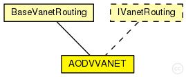

This documentation is released under the Creative Commons license
This documentation is released under the Creative Commons license(no description)
The following diagram shows usage relationships between types. Unresolved types are missing from the diagram. Click here to see the full picture.
The following diagram shows inheritance relationships for this type. Unresolved types are missing from the diagram. Click here to see the full picture.
| Name | Type | Description |
|---|---|---|
| BaseVanetRouting | simple module |
Base module for vanet routing protocols |
| Name | Type | Default value | Description |
|---|---|---|---|
| excludedInterfaces | string | "" |
list of interfaces excluded by the vanet routing protocol |
| interfaces | string | "prefix(wlan)" |
list of routing interfaces were the routing protocol is active, the prefix(namei) indicate all the interfaces with "namei" in his names |
| useVanetLabelRouting | bool | true |
the routing entries are marked IPv4Route::MANET, this label force an exact search with independent of the mask |
| useICMP | bool | true |
By default the module use the ICMP but it's necessary to activate with the method setSendToICMP(true) |
| setICMPSourceAddress | bool | false |
set the datagram source address if the address is undefined to the address of node This parameter allow that the ICMP messages could arrive to the source applications |
| vanetPurgeRoutingTables | bool | true | |
| autoassignAddress | bool | false |
assign IP adresses automatically to the interfaces |
| autoassignAddressBase | string | "10.0.0.0" | |
| isStaticNode | bool | false | |
| networkProtocolModule | string | "^.networkLayer.ip" | |
| askGratuitousRREP | bool | false |
see RFC 3561: 6.6.3 |
| useHelloMessages | bool | false |
see RFC 3561: 6.9 |
| useLocalRepair | bool | false |
see RFC 3561: 6.12 *not implemented yet* |
| udpPort | int | 654 | |
| maxPeriodicJitter | double | helloInterval / 4 |
it MUST NOT be negative; it MUST NOT be greater than MESSAGE_INTERVAL/2; it SHOULD NOT be greater than MESSAGE_INTERVAL/4. |
| periodicJitter | double | uniform(0s, maxPeriodicJitter) |
jitter for externally triggered message generation and message forwarding |
| maxJitter | double | 5ms |
RFC 5148: need more revise: As well as the decision as to whether to use jitter being dependent on the medium access control and lower layers, the selection of the MAXJITTER parameter SHOULD be appropriate to those mechanisms. |
| jitter | double | uniform(0ms, maxJitter) |
jitter for broadcasts |
| helloInterval | double | 1s |
every helloInterval seconds a node broadcasts Hello messages (if it is necessary) |
| allowedHelloLoss | int | 2 |
allowedHelloLoss * helloInterval is the lifetime value for Hello messages |
| activeRouteTimeout | double | 3s |
the timeout value for cached routes If Hello messages are used, then the ACTIVE_ROUTE_TIMEOUT parameter value MUST be more than the value (ALLOWED_HELLO_LOSS * HELLO_INTERVAL). |
| netDiameter | int | 35 |
the maximum possible number of hops between two nodes in the network |
| nodeTraversalTime | double | 0.04s |
an estimation of the average one-hop traversal time |
| rerrRatelimit | int | 10 |
maximum number of RERR messages that the AODV may originate in 1s. |
| rreqRetries | int | 2 |
specifies the number of times AODV will repeat an expanded ring search for a destination |
| rreqRatelimit | int | 10 |
maximum number of RREQ messages that the AODV may originate in 1s. |
| timeoutBuffer | int | 2 |
plus time to wait for a delayed RREP (due to congestion) (to omit this buffer set it to 0) |
| ttlStart | int | 2 |
specifies the TTL value when initiating a route request |
| ttlIncrement | int | 2 |
specifies the value by which the TTL will be incremented each time a RREQ is retransmitted |
| ttlThreshold | int | 7 |
the maximum value of TTL over which NET_DIAMETER value will be used to broadcast any RREQ |
| localAddTTL | int | 2 |
it is used by the formula which calculates the initial TTL of the RREQ for a local repair |
| losRange | double | 10 |
line of site range. |
| speedWeight | double | 10 |
speed weight factor |
| accelerationWeight | double | 10 |
acceleration weight factor |
| directionWeight | double | 10 |
direction weight factor |
| linkQualityWeight | double | 10 |
link quality weight factor |
| myRouteTimeout | double | 2 * activeRouteTimeout |
the value of the lifetime field that a destination node places in RREPs |
| deletePeriod | double | 5 * max(activeRouteTimeout, helloInterval) |
the time after which an expired route is deleted |
| blacklistTimeout | double | rreqRetries * netTraversalTime |
the time after which a blacklisted node is removed from the blacklist |
| netTraversalTime | double | 2 * nodeTraversalTime * netDiameter |
an estimation of the traversal time for the complete network |
| nextHopWait | double | nodeTraversalTime + 0.01s |
timeout for a RREP-ACK |
| pathDiscoveryTime | double | 2 * netTraversalTime |
buffer timeout for each broadcasted RREQ message |
| log_to_file | bool | false |
dump AODV log files (non RFC parameter) |
| hello_jittering | bool | true |
add a +-50ms jitter to the hello interval (non RFC parameter) |
| optimized_hellos | bool | true |
do not send hello messages if there are no active routes (non RFC parameter) |
| expanding_ring_search | bool | true |
use expanding ring search (section 6.4) |
| local_repair | bool | true |
allow the routes to be locally repaired if a node detects link failure (section 6.12) |
| rreq_gratuitous | bool | true |
force gratuitous flag on all RREQs (section 6.6.3) |
| debug | bool | false |
dump debug messages to file (non RFC parameter) |
| rt_log_interval | int | 0ms |
periodically log routing table to routing table logfile, value is the interval in msecs (0 = off) |
| unidir_hack | int | 0 |
detect and avoid unidirectional links (boolean) (section 6.8) |
| receive_n_hellos | int | 1 |
receive N HELLOs before treating as neighbor (non RFC parameter) |
| wait_on_reboot | int | 1 |
wait after reboot and gather routes before sending out routing info (section 6.13) |
| ratelimit | int | 1 |
do not send out more than 10 RERR or RREQ (boolean) (section 6.3 abd 6.11) |
| active_timeout | int | 3000ms |
active route timeout in (ms) (section 6.2 and 6.7) |
| llfeedback | bool | false |
allow layer2 link-detection instead of sending hello messages (section 6.10) |
| internet_gw_mode | int | 0 |
NOT SUPPORTED (boolean) (run this node as an internet gateway (non RFC parameter)) |
| internet_gw_address | string | "0.0.0.0" |
NOT SUPPORTED |
| targetOnlyRreq | bool | false | |
| EqualDelay | bool | true |
add a jitter to broadcast operations (RREQ, HELLO broadcast) (non RFC - omnetpp specific) |
| broadcastDelay | double | uniform(0s,0.005s) |
the delay added to broadcast operations if EqualDelay is set (used to model processing time) |
| unicastDelay | double | 0s |
a delay added to unicast messaged (i.e. data packet forwarding) (used to model processing time) |
| UseIndex | bool | false |
use the interface index instead the ip to identify the interface |
| useHover | bool | false | |
| costStatic | int | 1 | |
| costMobile | int | 4 | |
| isRoot | bool | false |
Proactive RREQ |
| proactiveRreqTimeout | int | 5000ms |
5 seconds |
| proactiveLifeTime | int | 0ms |
if zero lifetime is PATH_DISCOVERY_TIME - 2 * rreq_new_hcnt * NODE_TRAVERSAL_TIME; |
| startRreqProactive | int | uniform(1000ms,2000ms) | |
| propagateProactive | bool | true |
Proactive feedback |
| checkNextHop | bool | false | |
| PublicRoutingTables | bool | false | |
| RreqDelayInReception | bool | false |
if true the delay introduced to the RREq is in reception |
| rreqWait | double | 0.01s | |
| avoidDupRREP | bool | false |
only if promiscous is active, check if rrep has been sent by other node |
| RRERFoceDiscover | bool | false |
if true, if the node has num of precursors equal to 0 and the RRER has N flag to '1' and the message has arrive from next hop the node will launch a new discovering process |
| Name | Value | Description |
|---|---|---|
| display | i=block/routing | |
| class | AODVVANETRouting | |
| reactive |
IP module will send control messages when no route is present to the destination |
| Name | Direction | Size | Description |
|---|---|---|---|
| from_ip | input | ||
| to_ip | output |
simple AODVVANET extends BaseVanetRouting like IVanetRouting { parameters: @class(AODVVANETRouting); @reactive; // IP module will send control messages when no route is present to the destination string networkProtocolModule = default("^.networkLayer.ip"); bool askGratuitousRREP = default(false); // see RFC 3561: 6.6.3 bool useHelloMessages = default(false); // see RFC 3561: 6.9 bool useLocalRepair = default(false); // see RFC 3561: 6.12 *not implemented yet* int udpPort = default(654); double maxPeriodicJitter @unit("s") = default(helloInterval / 4); // it MUST NOT be negative; it MUST NOT be greater than MESSAGE_INTERVAL/2; it SHOULD NOT be greater than MESSAGE_INTERVAL/4. volatile double periodicJitter @unit("s") = default(uniform(0s, maxPeriodicJitter)); // jitter for externally triggered message generation and message forwarding // RFC 5148: // need more revise: As well as the decision as to whether // to use jitter being dependent on the medium access control and // lower layers, the selection of the MAXJITTER parameter SHOULD // be appropriate to those mechanisms. double maxJitter @unit("s") = default(5ms); volatile double jitter @unit("s") = default(uniform(0ms, maxJitter)); // jitter for broadcasts double helloInterval @unit("s") = default(1s); // every helloInterval seconds a node broadcasts Hello messages (if it is necessary) int allowedHelloLoss = default(2); // allowedHelloLoss * helloInterval is the lifetime value for Hello messages double activeRouteTimeout @unit("s") = default(3s); // the timeout value for cached routes If Hello messages are used, then the // ACTIVE_ROUTE_TIMEOUT parameter value MUST be more than the value // (ALLOWED_HELLO_LOSS * HELLO_INTERVAL). int netDiameter = default(35); // the maximum possible number of hops between two nodes in the network double nodeTraversalTime @unit("s") = default(0.04s); // an estimation of the average one-hop traversal time int rerrRatelimit = default(10); // maximum number of RERR messages that the AODV may originate in 1s. int rreqRetries = default(2); // specifies the number of times AODV will repeat an expanded ring search for a destination int rreqRatelimit = default(10); // maximum number of RREQ messages that the AODV may originate in 1s. int timeoutBuffer = default(2); // plus time to wait for a delayed RREP (due to congestion) (to omit this buffer set it to 0) int ttlStart = default(2); // specifies the TTL value when initiating a route request int ttlIncrement = default(2); // specifies the value by which the TTL will be incremented each time a RREQ is retransmitted int ttlThreshold = default(7); // the maximum value of TTL over which NET_DIAMETER value will be used to broadcast any RREQ int localAddTTL = default(2); // it is used by the formula which calculates the initial TTL of the RREQ for a local repair double losRange = default(10); // line of site range. double speedWeight = default(10); // speed weight factor double accelerationWeight = default(10); // acceleration weight factor double directionWeight = default(10); // direction weight factor double linkQualityWeight = default(10); // link quality weight factor double myRouteTimeout @unit("s") = default(2 * activeRouteTimeout); // the value of the lifetime field that a destination node places in RREPs double deletePeriod @unit("s") = default(5 * max(activeRouteTimeout, helloInterval)); // the time after which an expired route is deleted double blacklistTimeout @unit("s") = default(rreqRetries * netTraversalTime); // the time after which a blacklisted node is removed from the blacklist double netTraversalTime @unit("s") = default(2 * nodeTraversalTime * netDiameter); // an estimation of the traversal time for the complete network double nextHopWait @unit("s") = default(nodeTraversalTime + 0.01s); // timeout for a RREP-ACK double pathDiscoveryTime @unit("s") = default(2 * netTraversalTime); // buffer timeout for each broadcasted RREQ message bool log_to_file = default(false); // dump AODV log files (non RFC parameter) bool hello_jittering = default(true); // add a +-50ms jitter to the hello interval (non RFC parameter) bool optimized_hellos = default(true); // do not send hello messages if there are no active routes (non RFC parameter) bool expanding_ring_search = default(true); // use expanding ring search (section 6.4) bool local_repair = default(true); // allow the routes to be locally repaired if a node detects link failure (section 6.12) bool rreq_gratuitous = default(true); // force gratuitous flag on all RREQs (section 6.6.3) bool debug = default(false); // dump debug messages to file (non RFC parameter) int rt_log_interval @unit(ms) = default(0ms); // periodically log routing table to routing table logfile, value is the interval in msecs (0 = off) int unidir_hack = default(0); // detect and avoid unidirectional links (boolean) (section 6.8) int receive_n_hellos = default(1); // receive N HELLOs before treating as neighbor (non RFC parameter) int wait_on_reboot = default(1); // wait after reboot and gather routes before sending out routing info (section 6.13) int ratelimit = default(1); // do not send out more than 10 RERR or RREQ (boolean) (section 6.3 abd 6.11) int active_timeout @unit(ms) = default(3000ms); // active route timeout in (ms) (section 6.2 and 6.7) bool llfeedback = default(false); // allow layer2 link-detection instead of sending hello messages (section 6.10) int internet_gw_mode = default(0); // NOT SUPPORTED (boolean) (run this node as an internet gateway (non RFC parameter)) string internet_gw_address = default("0.0.0.0"); // NOT SUPPORTED bool targetOnlyRreq = default(false); bool EqualDelay = default(true); // add a jitter to broadcast operations (RREQ, HELLO broadcast) (non RFC - omnetpp specific) volatile double broadcastDelay @unit("s") = default(uniform(0s,0.005s)); // the delay added to broadcast operations if EqualDelay is set (used to model processing time) volatile double unicastDelay @unit("s") = default(0s); // a delay added to unicast messaged (i.e. data packet forwarding) (used to model processing time) bool UseIndex = default(false); // use the interface index instead the ip to identify the interface bool useHover = default(false); int costStatic = default(1); int costMobile = default(4); bool isRoot = default(false); // Proactive RREQ int proactiveRreqTimeout @unit(ms) = default(5000ms);// 5 seconds int proactiveLifeTime @unit(ms) = default(0ms); // if zero lifetime is PATH_DISCOVERY_TIME - 2 * rreq_new_hcnt * NODE_TRAVERSAL_TIME; int startRreqProactive @unit(ms) = default(uniform(1000ms,2000ms)); bool propagateProactive = default(true); // Proactive feedback bool checkNextHop = default(false); bool PublicRoutingTables = default(false); bool RreqDelayInReception = default(false); // if true the delay introduced to the RREq is in reception volatile double rreqWait @unit("s") = default(0.01s); bool avoidDupRREP = default(false);// only if promiscous is active, check if rrep has been sent by other node bool RRERFoceDiscover = default(false); // if true, if the node has num of precursors equal to 0 and the RRER has N flag to '1' and the message has arrive from next hop the node will launch a new discovering process gates: input from_ip; output to_ip; }
This documentation is released under the Creative Commons license